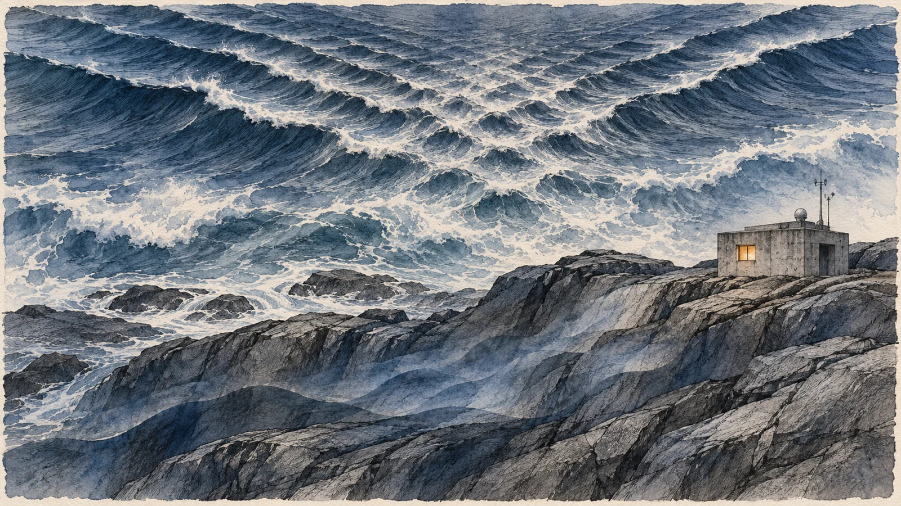

Novell ·
Det som blev kvar mellan skalven
Den sista natten i bergrummet ska Ingrid ta hand om stationens skalvregistreringar. Mellan två skalv hittar hon ett skäl att ringa sin bror.

På skrivbordet i bergrummet låg en kanelbulle inslagen i en servett. Bredvid den hade Emil lagt portnyckeln, den med en flisa blå färg kvar i axet. På papperspåsen stod det: Ät medan den är färsk. Han hade skrivit det med snickarpennan. Ingrid kunde se precis var spetsen gått av i ä:et. Hon hängde nyckeln på kroken vid dörren och vek påsen runt bullen igen.
Klockan sju nästa morgon skulle bergrummet övergå till kommunen. Den gamla stationen behövde nya kablar, och universitetet hade dragit sig ur. Ingrid hade fått natten på sig att hämta det sista ur datorn. Hon skulle kopiera skalvfilerna och den tekniska loggen. De långa registreringarna mellan skalven hade ingen begärt. Det var därför hon tagit med den lilla hårddisken, den som precis rymdes i handen. När kommunens tekniker kom klockan sju skulle han få nyckeln. Universitetets arkiv väntade på filerna.
Hon drog av sig jackan. Längre in i tunneln droppade vatten i ett plåtfat. Framför instrumentet stod hennes fars pall, trots att ingen längre behövde kliva upp för att läsa av någonting. Han hade varit elektriker och följt med henne hit första gången för att dra en ledning som de båda trodde skulle ta en eftermiddag. När de var färdiga hade hon kunnat höra honom vissla från andra sidan bergväggen, genom ventilationsröret.
Hon öppnade det senaste dygnets registrering för att se att instrumentet fortfarande gick. Det gjorde det. Från eftermiddagen syntes en lång förtjockning i det annars tunna spåret. På frekvensbilden intill låg ett ljust band som hon kunde följa från eftermiddagen ända fram till nu. Ingrid tryckte handen mot bordsskivan. Ingenting. Inte heller kaffet längst ner i koppen rörde sig när hon satte den på pallen.
Förra gången hon sett en sådan förtjockning stod en lastbil på tomgång vid grinden. Hon tog ficklampan och gick ut. I ljuskäglan syntes gruset, den nedhängande kedjan och hennes egna stövelspår. Ingen bil stod där nu. Vem som varit där tidigare på dagen visste hon inte. Nere vid skärmen syntes bandet fortfarande. Pumpens logg gav henne något bättre att jämföra med: också under de långa uppehållen mellan körningarna hade instrumentet registrerat rörelsen. I en kuststations mätningar och på en annan station långt inåt land såg hon stråk i ungefär samma del av spektrumet. Hon lät alla tre bilderna ligga öppna.
Hon ringde Emil. Släpet hade skramlat förbi på vägen när hon kom; han skulle först förbi båthuset nere i kustbyn och sedan hämta pallen på tillbakavägen. Han svarade innan hon hunnit tänka ut hur hon skulle fråga. ”Hittade du bullen?”
”Ja. Hur går sjön nere hos dig?”
”Det slår under bryggan. Jag fick lägga en fender till mellan ekan och stolpen.” Genom telefonen hörde hon ett kort gnissel. Hon kände igen beslaget på hans gamla båthusdörr.
”Jag kommer upp efter pallen sen”, sa han. Ingen av dem behövde den hemma. Men den hörde inte till stationen, lika lite som den lilla blå jacka som en vinter för länge sedan hade hängt på en av dess pinnar för att torka. Pappa hade skrivit Ingrid och Emil under sitsen.
Ingrid drog fram vågprognosen. Utanför kusten kom dyningen från väster. Längre ut låg ett område där två vågfält överlappade och pilarna pekade nära nog åt motsatta håll. Mellan krönen var det ungefär tio sekunder i båda systemen. I bandet på hennes skärm tog en svängning omkring fem sekunder. Hon knackade takten mot knät. Två svängningar i berget på den tid det tog för nästa krön att passera en punkt ute till havs. Först hade hon letat efter samma takt på de båda skärmarna.
Hon mindes en vågränna från utbildningen. När två likadana vågtåg möttes låg några fläckar på ytan nästan stilla medan vattnet hävde sig bredvid. Läraren lade en penna tvärs över glaskanten så att de hade något fast att sikta efter. Ingrid hade stått kvar längst av alla. Det var lätt att se vad vågorna gjorde tillsammans på ytan. Vad som hände med trycket långt därunder gick inte att se genom att följa pennan. Enligt den teori de sedan räknade på kan vågor som möts på det sättet ge en tryckvariation med ungefär dubbla vågfrekvensen. Den kan belasta havsbottnen och alstra markvågor. Det gav henne en möjlig förklaring till femsekundersbandet.
Hon skrev stormen i filens kommentarsruta. Sedan suddade hon bort ordet. En våg som mötte sin egen återkastning vid en kust kunde också bidra till bandet. Och flera områden i havet kunde skicka vibrationer till samma station samtidigt. Ett ensamt ljust band visade inte var trycket växlat. Skulle hon vilja jämföra spåren ordentligt behövde hon fler stationer, riktning och period från vågfälten, och flera nätter då tänkbara källor inte råkade ligga på samma ställe.
På stationen längst inåt land hade bandet kommit upp ur bakgrunden som en fläck på ett papper som blivit vått. Här hos henne hade det börjat som en tunn kant. Hon drog linjalen över skärmen och försökte ge första synliga punkten ett klockslag. Hon sänkte visningsgränsen för hur svaga rörelser som fick färg på skärmen. Då syntes stråket tidigare på en av bilderna. Mätvärdena i filen var desamma. Hon tog bort de små tidsmärkena hon nyss satt dit. Så lätt hade det varit att rita en färdväg av skillnaden mellan två tidpunkter då hon kunde säga nu syns det. På arbetsbladet fick stationerna varsin rad, men det blev ingen pil mellan dem.
Hon plockade upp telefonen igen. ”Har du plats på den stora disken i fars arbetsrum?”
”Ja. Bilderna från hans gamla skivor kopierar jag till datorn. Disken i lådan är tom. Är det bråttom?”
Hon öppnade katalogen för skalven. För varje händelse låg en kort fil med prydliga kanter. I några av dem hade någon klippt bort nästan allting före den första urskiljbara skakningen. Hon förstod varför. Om uppgiften var att hitta ett skalv slapp man leta i tre dygns mätningar. Men ville man jämföra tisdagar då två vågfält möttes med tisdagar med en enda tydlig dyning, fanns inga sådana tisdagar i katalogen.
Hon hade vetat vad som saknades när hon packade. Den stora disken låg i lådan med stämjärnen. För att komma åt den måste man dra upp lådan snett och lyfta undan läderfodralet med pappas bryne. Hennes hand visste precis hur det skulle göras. Ändå hade hon ända sedan begravningen gått förbi den dörren. Emil hade suttit där och kopierat bilder, en skiva i taget. Hon hade aldrig frågat hur det var att ta den första ur sitt fodral.
”Ja”, sa hon. ”Kan du ta vägen om arbetsrummet på väg hit? Jag behöver den stora också.” Han drog igen båthusdörren. ”Jag tar handduken som ligger över hyveln.”
Medan han körde tog hon fram det som skulle följa med mätningarna: klockans logg, uppgifter om instrumentbytet, filerna som berättade hur en siffra från just den här seismometern skulle översättas till markrörelse. I pärmen med de äldsta filnamnen stod brus med hennes egen handstil. Hon lät ordet stå kvar. I den tekniska loggen lade hon till en rad om vad ordet hade betytt när de sorterat materialet, och en om vad som fanns kvar trots det.
När hon hörde släpet igen var det ännu mörkt. Emil hade svept in disken i en kökshandduk så att kontakten inte skulle slå mot verktygen. Ingrid kopplade in den och satte hela mätserien och uppgifterna om stationen på kopiering. Den lilla disken med skalvfilerna och teknikloggen lade hon i arkivets vadderade kuvert. Hon hade redan läst tillbaka de filerna och jämfört dem med originalen. Först nu öppnade hon påsen på skrivbordet. Emil tog fram sin fickkniv och delade bullen på servetten. Hon fick mitten, som när de var små.
De satt kvar medan de sista mapparna fördes över. När datorn var färdig öppnade Ingrid två nätter från den stora disken och jämförde med samma nätter i stationens arkiv. Den ena innehöll ett skalv. Den andra gick att följa från första till sista timmen fast ingen hade ringat in en enda händelse. Hon skrev datum på en etikett och lade disken i väskan.
”Vad ska det stå om i natt?” frågade Emil. Ingrid vred skärmen så att han kunde se de tre banden och de tomma mellanrummen på arbetsbladet. ”Att det här finns kvar att jämföra.” Hon vek ihop servetten om smulorna och stoppade den i påsen.
De bar pallen uppför gången med sitsen på kant. Halvvägs fick de stanna för att byta grepp. Där stod namnen i det bleka ficklampsljuset. Pappa hade fått ta i ett extra tag med pennan där en kvist gick genom E:et. Uppe vid grinden väntade kommunens tekniker. Ingrid gick ner en sista gång, tog nyckeln från kroken och låste efter sig. När hon lämnat den blåfläckiga nyckeln i teknikerns hand stod Emil kvar vid släpet. Han hade hållit ena änden av spännremmen åt henne. Hon tog emot den och drog fast pallen tillsammans med honom.
Efter berättelsen
Vad vet vi?
Belagt: Nära motriktade havsvågor med liknande period kan ge en tryckkomponent vid ungefär dubbla vågfrekvensen och alstra sekundära mikroseismer. Sådana markvågor kan registreras långt inåt land. Öppet: Två vågsystem ute till havs och kustreflektion är möjliga bidrag bland flera. Att två stationer visar liknande band räcker inte för att bestämma källan. För en sådan prövning behöver man jämföra samtidiga stationsdata med vågfältens riktningar och perioder och ta hänsyn till hur markvågorna utbreder sig och dämpas. Fiktion: Syskonen, bergrummet, vågrännelektionen och nattens registreringar är gestaltade. Ingen verklig mätserie visas.
Källor och deras relevans
- M. S. Longuet-Higgins (1950). A Theory of the Origin of Microseisms. Philosophical Transactions of the Royal Society A.
Härledde mekanismen som gör att motriktade havsvågor kan driva tryckvariationer vid dubbla frekvensen. Teorin identifierar inte en viss storms bidrag till en specifik mätning.
- F. Ardhuin, E. Stutzmann, M. Schimmel och A. Mangeney (2011). Ocean wave sources of seismic noise. Journal of Geophysical Research: Oceans.
Kombinerade vågmodell och seismiska observationer och skilde mellan bland annat kustreflektion och mötande vågsystem. Källfördelningen beror på modellens antaganden, bland annat om reflektion och dämpning.
- A. Bertoldi, S. Gaffet, M. Prevedelli och D. A. Smith (2024). Forecasting ocean wave-induced seismic noise. Scientific Reports.
Prövade en stationsanpassad prognos för havsrelaterat seismiskt brus kring 1 Hz vid det underjordiska laboratoriet LSBB. Studien illustrerar en prognosmetod i ett annat frekvensområde än berättelsens femsekundersband. Den lokaliserar inte källan till Ingrids fiktiva registrering.